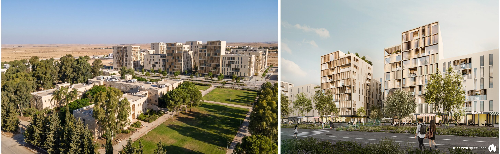
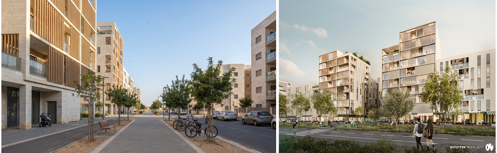

הלוקיישנים
איפה זה קורה

השכונה והקמפוס מהאווירמימין: ההדמיה שלכם · משמאל: כך זה ייראה בסרטון. מבט רחפן: עצי קמפוס ספיר בקדמה, בנייני האקדמיה מאחור, לפי ההדמיה שלכם. הפריים הפותח של שוט 1 ובסיס לשוט 6. דירת הגןמימין: ההדמיה שלכם · משמאל: כך זה ייראה בסרטון. דשא, פרגולת עץ, דלת הזזה לסלון, רפפות העץ מעל. שוטים 2 ו-5.
דירת הגןמימין: ההדמיה שלכם · משמאל: כך זה ייראה בסרטון. דשא, פרגולת עץ, דלת הזזה לסלון, רפפות העץ מעל. שוטים 2 ו-5. גן הילדים ברחובמימין: ההדמיה שלכם · משמאל: כך זה ייראה בסרטון. גן עירוני עם חצר מגודרת, ארגז חול תחת סככה, ילדים וגננת, הבניינים מאחור. שוט 3.
גן הילדים ברחובמימין: ההדמיה שלכם · משמאל: כך זה ייראה בסרטון. גן עירוני עם חצר מגודרת, ארגז חול תחת סככה, ילדים וגננת, הבניינים מאחור. שוט 3.
הרחובמימין: ההדמיה שלכם · משמאל: כך זה ייראה בסרטון. אבן בהירה ורפפות עץ כמו בהדמיה, שביל הליכה רחב, עגלה בכניסה. שוט 3. תחנת הרכבת שדרותמימין: התמונה האמיתית של התחנה · משמאל: כך זה ייראה בסרטון. נבנתה מתמונה אמיתית של התחנה: הגג הלבן, חזית הזכוכית והקורות האלכסוניות, רכבת קומותיים. שוט 4.
תחנת הרכבת שדרותמימין: התמונה האמיתית של התחנה · משמאל: כך זה ייראה בסרטון. נבנתה מתמונה אמיתית של התחנה: הגג הלבן, חזית הזכוכית והקורות האלכסוניות, רכבת קומותיים. שוט 4. אותה תבנית בכחול ולבן של האקדמיה.
אותה תבנית בכחול ולבן של האקדמיה.